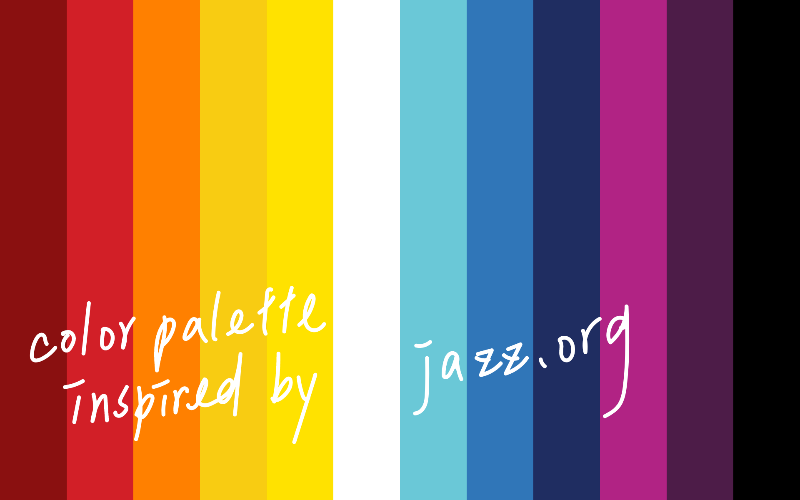
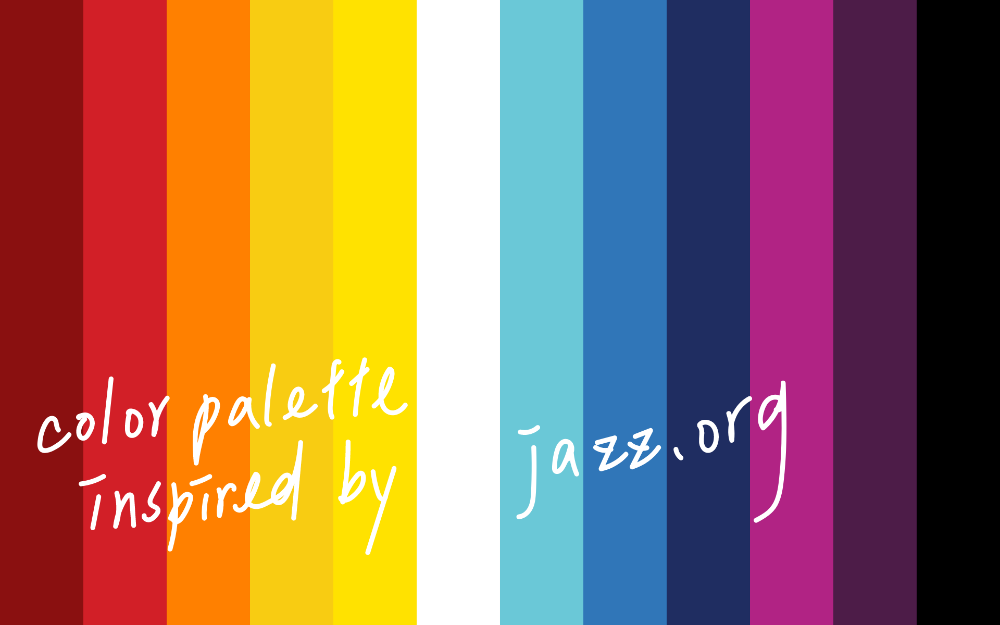

To flow, to dimensional drift, to morph, to adduct, to function, to prompt, to act, to navigate. At the intersection of architecture and user experience, levels and fragments of the movement within a space – in the transition of manners and sensations – are a constructed and real identities of self-expressions.
According to Rem Koolhaas in his book, Delirious New York: A Retroactive Manifesto for Manhattan, he asserts that the primary intent of architecture must include all the performative activities of human occupants within a space (Koolhaas, 1994). Dance, on the other hand, is defined as “the movement of the body in a rhythmic way, usually to music and within a given space” (Britannica).
To inspire, I investigate the processes through which movements can be stimulated, emerged, envisioned, described, preoccupied, deconstructed, or converged in an improvisational way. By isolating humans, and their actions, within the constructs of manmade environments, I believe that mediated movement offers a unique opportunity to re-envision user interface design by reexamining the interplay between humans and physical spaces.
Interface, as defined by Merriam Webster, is a surface forming a common boundary of two bodies, spaces, or phase. It is a medium where two parties meet. I imagine interfaces have limitation in directions, so that they are causing human's body movement. For instance, the elevator itself is an interface, it has two directions - up and down; the car it self is an interface, it has no limitation in directions, we can go wherever we want.


A ‘limited-blue-notes’ interface is created for people to play the blues by drawing to create variable outcomes. The interface’s identity system derives from the concept of ‘invisible buttons;’ the purpose is to reconfigure the relationship between music and visuals.
 


1. Identifiable Movement
A few years ago in my modeling career, I first recognized that differentiating others' movements became a good way for me to locate myself on the runway. That night was named Vogue Fashion’s Night Out when everything was styled. I remembered the day it rained a bit before the show started. I had a deep side part with a low sleek bun for my hairstyle with azure cerulean blue eyeshadows in one of Leonard Paris 2018 Spring Summer collections - robes and pajama-style patterned jumpsuit, which appeared exceptionally flowy in the unconditional breezy night. Staring to the crowd dimmed in the darkness, my eyes glowed with the gleam of the distant sea. With the spotlights in every quarter, in a contradictory manner, I couldn’t even sense the 2 meters lifted runway edges and recognize any person passing by myself. Tiptoeing in 7 inches high heels, in the twinkling of an eye, I could almost feel the flow of the movement on the stage and portrait the shape of the space by merely focusing on the flow of the movement. With the sensibility of the transient gleam of movements from others, I positioned myself.
Movement within a space is a constructed and real identity of self-expression which actually speaks for your values of consideration (Shadmehr and Ahmed, 2020). “The strongest design element is variability,” stated by Lauren Friedrich, a 2016 graduate of Harvard’s Graduate School of Design in her thesis Design for Movement. To flow, to dimensional drift, to morph, to adduct, to function, to prompt, to act, to navigate. At the intersection of architecture and user experience, levels and fragments of the movement within a space – in the transition of manners and sensations – are a constructed and real identities of self-expressions.
2. Frictions, Mediations and Decisions
Movements are fluid and recurrently transformed, mutated, and replicated through interpretation of mediation; movements aren’t formed by intuition but by stimulus and choices. An immediate decision is needed when it comes to fashion since everything lives ‘at the moment’ and unexpected circumstances happen all over the place. During fashion week seasons, my schedule is mostly chronologically filled with 1) runway shows - a non-stop experience occupied by celebrities, press, buyers, stylists, sponsors and photographers, 2) campaign shootings - interconnected directly with stylists and photographers, and 3) trunk shows – a cubical space where objects and humans meet episodically and frictionally. Walking up the spiral stairs with vertically snapped portrait monitors on mirror walls aside, four models showcased Dior 2019 Fall Winter collection. With the highest common factor of beats in both music and mind, which interprets as cadence – a modulation and inflection of the voice, we encountered multiple displays shelves centering in the middle of aisles, sales weaving their ways from wareroom to cubicles, and waiters/waitresses juggling with desserts and teas plates. We elegantly mediate through ‘frictions.’
Mediation is the trigger that keeps a movement proceeding (Vygotsky, 1986), counterbalancing disturbance helps human generate thoughts and activities in physical spaces (Helene and Gay, 2004), and counterbalancing pairs of opposites are identified as the main components in threshold spaces which are the transitions in architecture (Boettger, 2004). Vygotsky introduced semiotic mediation, acknowledged by Kharkovite who categorized human activity by meaning and sense. “Entering human activity, it’s object loses its apparent naturalness and appears as an object of collective, social experience” (Vygotsky, 1986). In the article Activity Centered Design: An Ecological Approach, the authors Geri Gay and Helene Hembrooke presented a diagram of temporal interconnections and situatedness of different levels of activities and asserted the ideas of between-ness, situated-ness, and interpretive flexibility while encountering objects (Helene and Gay, 2004). “Anyone who creates the environment in which decisions are made is known as a Choice Architect” states Cass Sunstein and Richard Thaler in the book “Nudge” with the following: A nudge is “any aspect of the choice architecture that alters people’s behavior in a predictable way without forbidding any options or significantly changing their economic incentives” (Sunstein and Thaler, 2008).
3. Narratives: In Between Context and User
Another defining realization of movement came to me during a photo shoot in a seamless man-made studio. In around a hundred by a hundred square feet width and fifty feet height studio, people gathered in groups under white and smoky yellow dim illuminants respectively. I hurried down the stairs followed by a person carrying intercom at her ear. It was in a piercing cold warehouse someplace in Shanghai at the beginning of 2019 about to shoot for Clinique iD Moisturizer campaign directed by artists and filmmakers Lernert and Sander. Time lapsed, sitting on a stool near an old-fashion atrovirens heater under irradiation of dazzling white illuminants from my right and front, I was monitored by sales, marketers, copywriters and creative directors in yellow dim lights 30 feet away. One camera erected on telescopic stand with small wheels moved front and backwards on trajectory; two 96” monitors set at my 1 o’clock and 2 o’clock direction. An unintentional movement gave narrative to one confined image which was then defined by the agency as beauty, and I continue to find intrigue in the freedom and variation we can experiment with even in constructed spaces.
At the intersection of architecture (context over the user) and user experience (user over the context), the charm in between should be creatively controlled, expressed, and afford, which is not centering around human but how individuality and the space communicate with one another and further form a chain of narrative. In the sphere of product and user interface design, David Rose, the author of enchanted objects posed the seven abilities of enchanted object: glanceability, gestureability, affordability, wearability, indestructability, usability, and loveability (Rose, 2014). Affordance is an essential term in design, presented by psychologist James J. Gibson, yet later utilized by Don Norman about Human-Computer Interaction. Form Follows Function, an expression that relates with affordance in design, was presented by American modeler Louis Sullivan and afterward generally utilized in the Modernism development. It expresses that the structure, shape, look of the item ought to relate and come from its capacity and reason (interaction-design.org).
Movement isn’t formed by intuition and unconsciousness but by choice and friction — perception within a space in the past, physical elements that prompt the choices, awareness of self-unique movement as an identity, and interface as a medium that bounds between human and space. By doing user experience research on how people actually interact with the space, I believe this process will fulfill my argument to initiate a new way of thinking about the dichotomies that exist in user interface design: friction vs. non-friction.
*note: heuristic analysis, secondary research and interface design are still in progress.